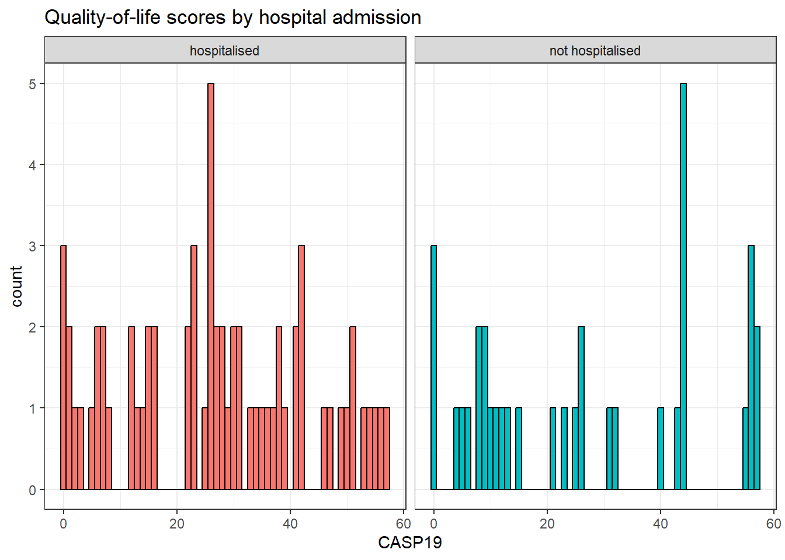

9 Data Wrangling
Intended Learning Outcomes
- Be able to select and filter data for relevance
- Be able to create new columns and edit existing ones
- Be able to handle missing data
Walkthrough video
There is a walkthrough video of this chapter available via Echo360. Please note that there may have been minor edits to the book since the video was recorded. Where there are differences, the book should always take precedence.
9.1 Set-up
First, create a new project for the work we’ll do in this chapter named 09-wrangle. Second, open and save and new R Markdown document named wrangle.Rmd, delete the welcome text and load the required packages for this chapter.
You’ll need to make a folder called “data” and download a data file into it: velocity.csv.
Download the Data transformation cheat sheet.
9.2 Wrangling functions
Data wrangling refers to the process of cleaning, transforming, and restructuring your data to get it into the format you need for analysis and it’s something you will spend an awful lot of time doing. Most data wrangling involves the reshaping functions you learned in Chapter 8 and six functions from the select, filter, arrange, mutate, summarise, and group_by. You’ll remember the last two from Chapter 5, so we’ll only cover them briefly.
It’s worth highlighting that in this chapter we’re going to cover these common functions and common uses of said functions. However,
We’ll use a small example table with a sprinter’s velocity out of the blocks (m/s) and performance satisfaction for two years from three starting block positions (bunched: <30 cm spacing between blocks; medium: 30-35 cm spacing between blocks; elongated: >35 cm spacing between blocks) over two block angles. After you load the data, use glimpse(velocity) or View(velocity) to get familiar with the data.
| position | angle | velocity_2022 | velocity_2023 | satisfaction_2022 | satisfaction_2023 |
|---|---|---|---|---|---|
| bunched | <50 degrees | 3.03 | 3.00 | low | very low |
| bunched | >50 degrees | 2.90 | 3.34 | very low | very high |
| medium | <50 degrees | 3.30 | 3.51 | very high | very high |
| medium | >50 degrees | 3.03 | 3.10 | high | low |
| elongated | <50 degrees | 3.01 | 3.46 | neutral | high |
| elongated | >50 degrees | 3.30 | 3.25 | high | neutral |
9.2.1 Select
You can select a subset of the columns (variables) in a table to make it easier to view or to prepare a table for display. You can also select columns in a new order.
By name or index
You can select columns by name or number (which is sometimes referred to as the column index). Selecting by number can be useful when the column names are long or complicated.
You can select each column individually, separated by commas (e.g., position, velocity_2022) but you can also select all columns from one to another by separating them with a colon (e.g., velocity_2022:satisfaction_2023).
The colon notation can be much faster because you don’t need to type out each individual variable name, but make sure that you know what order your columns are in and always check the output to make sure you have selected what you intended.
You can rename columns at the same time as selecting them by setting new_name = old_col.
Un-selecting columns
You can select columns either by telling R which ones you want to keep as in the previous examples, or by specifying which ones you want to exclude by using a minus symbol to un-select columns. You can also use the colon notation to de-select columns, but to do so you need to put parentheses around the span first, e.g., -(velocity_2022:velocity_2023), not -velocity_2022:velocity_2023.
Select helpers
Finally, you can select columns based on criteria about the column names.
| function | definition |
|---|---|
starts_with() |
select columns that start with a character string |
ends_with() |
select columns that end with a character string |
contains() |
select columns that contain a character string |
num_range() |
select columns with a name that matches the pattern prefix
|
What are the resulting columns for these four examples?
-
velocity %>% select(contains("_")) -
velocity %>% select(num_range("velocity_", 2022:2023)) -
velocity %>% select(starts_with("velocity")) -
velocity %>% select(ends_with("2023"))
9.2.2 Filter
Whilst select() chooses the columns you want to retain, filter() chooses the rows to retain by matching row or column criteria.
You can filter by a single criterion. This criterion can be rows where a certain column’s value matches a character value (e.g., “elongated”) or a number (e.g., 3.51). It can also be the result of a logical equation (e.g., keep all rows with a specific column value larger than a certain value). The criterion is checked for each row, and if the result is FALSE, the row is removed. You can reverse equations by specifying != where ! means “not”.
# select all rows where position equals elongated
velocity %>% filter(position == "elongated")
# select all rows where velocity_2023 was exactly equal to 3.51
velocity %>% filter(velocity_2023 == 3.51)
# select all rows where velocity_2022 was more than 3.1
velocity %>% filter(velocity_2022 > 3.1)
# everything but the elongated starting block position
velocity %>% filter(position != "elongated")Remember to use == and not = to check if two things are equivalent. A single = assigns the right-hand value to the left-hand variable (much like the <- operator).
Which IDs are kept from the table below?
| id | grade | score |
|---|---|---|
| 1 | A | 95 |
| 2 | A | 91 |
| 3 | C | 76 |
| 4 | B | 84 |
-
demo %>% filter(score < 80) -
demo %>% filter(grade == "A") -
demo %>% filter(grade != "A") -
demo %>% filter(score == 91)
You can also select on multiple criteria by separating them by commas (rows will be kept if they match all criteria). Additionally, you can use & (“and”) and | (“or”) to create complex criteria.
# positions and angles with improvement in velocity from 2022 to 2023 and with "very high" satisfaction in 2023
improvement_and_satisfaction <- velocity %>%
filter(
velocity_2023 > velocity_2022,
satisfaction_2023=="very high"
)
# the same as above, using & instead of a comma
improvement_and_satisfaction <- velocity %>%
filter(
velocity_2023 > velocity_2022 &
satisfaction_2023=="very high"
)
# positions and angles with improvement in velocity from 2022 to 2023 or with "very high" satisfaction in 2023
improvement_or_satisfaction <- velocity %>%
filter(
velocity_2023 > velocity_2022 |
satisfaction_2023=="very high"
)
# Improvement in velocity between 2022 and 2023 greater than 0.2 m/s
big_improvement <- velocity %>%
filter(velocity_2023 - velocity_2022 > 0.2)If you want the filter to retain multiple specific values in the same variable, the match operator (%in%) should be used rather than | (or). The ! can also be used in combination here, but it is placed before the variable name.
# retain any rows where position is bunched or medium, and where angle equals <50 degrees
velocity %>%
filter(position %in% c("bunched", "medium"),
angle == "<50 degrees")
# retain any rows where the position is not elongated, and where the angle does not equal <50 degrees
velocity %>%
filter(!position %in% "elongated",
angle != "<50 degrees")| Operator | Name | is TRUE if and only if |
|---|---|---|
A < B |
less than | A is less than B |
A <= B |
less than or equal | A is less than or equal to B |
A > B |
greater than | A is greater than B |
A >= B |
greater than or equal | A is greater than or equal to B |
A == B |
equivalence | A exactly equals B |
A != B |
not equal | A does not exactly equal B |
A %in% B |
in | A is an element of vector B |
Finally, you can also pass many other functions to filter. For example, the package str_detect() to only retain rows where the performance satisfaction rating includes the word “high”.
| position | angle | velocity_2022 | velocity_2023 | satisfaction_2022 | satisfaction_2023 |
|---|---|---|---|---|---|
| medium | <50 degrees | 3.30 | 3.51 | very high | very high |
| medium | >50 degrees | 3.03 | 3.10 | high | low |
| elongated | >50 degrees | 3.30 | 3.25 | high | neutral |
Note that str_detect() is case sensitive so it would not return values of “High” or “HIGH”. You can use the function tolower() or toupper() to convert a string to lowercase or uppercase before you search for substring if you need case-insensitive matching.
filter() is incredibly powerful and can allow you to select very specific subsets of data. But, it is also quite dangerous because when you start combining multiple criteria and operators, it’s very easy to accidentally specify something slightly different than what you intended. Always check your output. If you have a small dataset, then you can eyeball it to see if it looks right. With a larger dataset, you may wish to compute summary statistics or count the number of groups/observations in each variable to verify your filter is correct. There is no level of expertise in coding that can substitute knowing and checking your data.
9.2.3 Arrange
You can sort your dataset using arrange(). You will find yourself needing to sort data in R much less than you do in Excel, since you don’t need to have rows next to each other in order to, for example, calculate group means. But arrange() can be useful when preparing data for display in tables. arrange() works on character data where it will sort alphabetically, as well as numeric data where the default is ascending order (smallest to largest). Reverse the order using desc().
# arranging the table
# first by angle in alphabetical order
# then by "position" in reverse alphabetical order
velocity %>%
arrange(angle, desc(position))| position | angle | velocity_2022 | velocity_2023 | satisfaction_2022 | satisfaction_2023 |
|---|---|---|---|---|---|
| medium | <50 degrees | 3.30 | 3.51 | very high | very high |
| elongated | <50 degrees | 3.01 | 3.46 | neutral | high |
| bunched | <50 degrees | 3.03 | 3.00 | low | very low |
| medium | >50 degrees | 3.03 | 3.10 | high | low |
| elongated | >50 degrees | 3.30 | 3.25 | high | neutral |
| bunched | >50 degrees | 2.90 | 3.34 | very low | very high |
If you want to sort character data/categories in a specific order, turn the column into a factor and set the levels in the desired order.
velocity %>%
mutate(position = factor(position, levels = c("bunched", "medium", "elongated"))) %>%
filter(angle == ">50 degrees") %>%
arrange(position)| position | angle | velocity_2022 | velocity_2023 | satisfaction_2022 | satisfaction_2023 |
|---|---|---|---|---|---|
| bunched | >50 degrees | 2.90 | 3.34 | very low | very high |
| medium | >50 degrees | 3.03 | 3.10 | high | low |
| elongated | >50 degrees | 3.30 | 3.25 | high | neutral |
9.2.4 Mutate
The function mutate() allows you to add new columns or change existing ones by overwriting them by using the syntax new_column = operation. You can add more than one column in the same mutate function by separating the columns with a comma. Once you make a new column, you can use it in further column definitions. For example, the creation of improvement_percent below uses the column improvement_raw, which is created above it.
mutate() can also be used in conjunction with other functions and Boolean operators. For example, we can add another column to velocity2 that states whether there was an improvement in velocity out of the blocks that year or overwrite our angle variable as a factor. Just like when we used Boolean expressions with filter, it will evaluate the equation and return TRUE or FALSE depending on whether the observation meets the criteria.
You can overwrite a column by giving a new column the same name as the old column (see position or angle) above. Make sure that you mean to do this and that you aren’t trying to use the old column value after you redefine it.
You can also use case_when() to specify what values to return, rather than defaulting to TRUE or FALSE:
Use it to recode values:
And combine different criteria:
# new club management takes over - coaches only get a bonus if performance satisfaction was overall high or very high AND there was an improvement in performance
bonus2 <- velocity3 %>%
mutate(bonus_2023 = case_when(satisfaction_2023 == "high" &
improvement_category == "IMPROVEMENT" ~ "bonus",
satisfaction_2023 == "very high" &
improvement_category == "IMPROVEMENT" ~ "bonus",
TRUE ~ "No bonus")) # set all other values to "no bonus"Just like filter(), mutate() is incredibly powerful and the scope of what you can create is far beyond what we can cover in this book.
9.2.5 Summarise
You were introduced to the summarise() function in Section 5.3. This applies summary functions to an entire table (or groups, as you’ll see in the next section).
Let’s say we want to determine the mean velocity, plus the minimum and maximum velocity, for any starting block position, block angle, and year. First, we need to reshape the data like we learned in Chapter 8, so that there is a column for year and one column for velocity, instead of separate columns for each year. We’ll also drop the satisfaction data as we don’t need it for this analysis.
velocity4 <- velocity %>%
select(-satisfaction_2022, -satisfaction_2023) %>%
pivot_longer(cols = velocity_2022:velocity_2023,
names_to = c("velocity", "year"),
names_sep = "_",
values_to = "value") %>%
pivot_wider(names_from = velocity,
values_from = value)
head(velocity4) # check the format| position | angle | year | velocity |
|---|---|---|---|
| bunched | <50 degrees | 2022 | 3.03 |
| bunched | <50 degrees | 2023 | 3.00 |
| bunched | >50 degrees | 2022 | 2.90 |
| bunched | >50 degrees | 2023 | 3.34 |
| medium | <50 degrees | 2022 | 3.30 |
| medium | <50 degrees | 2023 | 3.51 |
Now we can create summary statistics for the table.
9.2.6 Group By
You were introduced to the group_by() function in Section 5.5. For example, you can break down the summary statistics above by year and block angle.
year_angle <- velocity4 %>%
group_by(year, angle) %>%
summarise(
mean_velocity = mean(velocity),
min_velocity = min(velocity),
max_velocity = max(velocity)
) %>%
ungroup()`summarise()` has grouped output by 'year'. You can override using the
`.groups` argument.| year | angle | mean_velocity | min_velocity | max_velocity |
|---|---|---|---|---|
| 2022 | <50 degrees | 3.113333 | 3.01 | 3.30 |
| 2022 | >50 degrees | 3.076667 | 2.90 | 3.30 |
| 2023 | <50 degrees | 3.323333 | 3.00 | 3.51 |
| 2023 | >50 degrees | 3.230000 | 3.10 | 3.34 |
Note that you can use the other wrangling functions on the summary table, for example:
How would you find out the maximum velocity for each starting block position?
You can also use group_by() in combination with other functions. For example, slice_max() returns the top N rows, ordered by a specific variable.
| position | angle | year | velocity |
|---|---|---|---|
| medium | <50 degrees | 2023 | 3.51 |
| elongated | <50 degrees | 2023 | 3.46 |
| bunched | >50 degrees | 2023 | 3.34 |
But this can be combined with group_by() to return the top velocity for each starting block position:
9.3 Complications
9.3.1 Rounding
Let’s say we want to round all the values to zero decimal places. The pattern below uses the across() function to apply the round() function to the columns from mean_velocity to max_velocity.
| year | angle | mean_velocity | min_velocity | max_velocity |
|---|---|---|---|---|
| 2022 | <50 degrees | 3 | 3 | 3 |
| 2022 | >50 degrees | 3 | 3 | 3 |
| 2023 | <50 degrees | 3 | 3 | 4 |
| 2023 | >50 degrees | 3 | 3 | 3 |
Please note that R rounds .5 to the nearest even number, rather than always up, like you were probably taught in school. This prevents overestimation biases, since x.5 is exactly halfway between x and x+1, so there is no reason it should always round up.
However, this might throw a monkey wrench into your own systems. For example, a school policy might be to round up for course marks at x.5. The solution is to define your own version of round() (modified from Andrew Landgraf’s blog). Put it in a hidden code block at the top of your script, with a clear warning that this is changing the way round() normally works. You don’t need to understand how this function works, just how to use it.
when you run this code, a new section will appear in the environment pane labelled “Functions”. In addition to using functions from packages, you can also make your own. It’s not something we are going to go into detail on in this course, but it’s useful to know the functionality exists.
Now round() should work as you’d expect.
Just remove your version if you want R to go back to the original method. Remember that you have to define the new round method in any script that uses it, and run the definition code before you use it interactively. You can check your Environment pane to see whether round is listed under “Functions”.
9.3.2 Missing values
If you have control over your data, it is always best to keep missing values as empty cells rather than denoting missingness with a word or implausible number. If you used “missing” rather than leaving the cell empty, the entire variable would be read as character data, which means you wouldn’t be able to perform mathematical operations like calculating the mean. If you use an implausible number (0 or 999 are common), then you risk these values being included in any calculations as real numbers.
However, we often don’t have control over how the data come to us, so let’s run through how to fix this.
Bad missing values
What if the coach hadn’t returned the data on the sprinter’s bunched starting block position velocity (entered as 0), and hadn’t yet timed the sprinter’s medium starting block position velocity for 2023, so someone entered it as “missing”? We’re going to show you two functions that you can use to recode or change values, ifelse() and case_when(). ifelse() is from Base R and can be slightly more intuitive to use initially. case_when() is from the
First, we’re going to recode the data to add in the missing values
For the bunched starting block position data, we can use ifelse() to set the value of velocity to 0 if the year is 2023 and position is “bunched”, otherwise use the value from the velocity column (i.e., don’t change).
Alternatively, we can use case_when() to convert the velocities for 2023 to 0. The last line of TRUE ~ velocity means that the default value is retrieved from the velocity column, if none of the previous criteria applied.
The case_when() function allows allows you to set multiple criteria, although we’re only using one non-default criterion here. It can be very useful, but takes a little practice.
The example below creates a label for each row. Notice how the label for the first row is “x < 2”, even though this row also fits the second criterion “y < 4”. This is because case_when() applies the first match to each row, even if other criteria in the function also match that row.
For the medium starting block position, we need to recode these values as “missing”. Since this is character data, and velocities are numeric data, the result will be coerced to a character.
# set velocity values to "missing" for medium starting block position 2023 rows
missing_bad <- missing_bad %>%
mutate(velocity = ifelse(year == 2023 & position == "medium",
"missing",
velocity))
# check structure of data, velocity now character
str(missing_bad)tibble [12 × 4] (S3: tbl_df/tbl/data.frame)
$ position: chr [1:12] "bunched" "bunched" "bunched" "bunched" ...
$ angle : chr [1:12] "<50 degrees" "<50 degrees" ">50 degrees" ">50 degrees" ...
$ year : chr [1:12] "2022" "2023" "2022" "2023" ...
$ velocity: chr [1:12] "3.03" "0" "2.9" "0" ...If we’re using case_when(), first we need to convert the velocity column to a character, as this function is a little pickier and won’t let you combine data types, since this almost always means that you’re making a mistake.
Now, if you try to compute the mean velocity, you will get an error message and the result will be NA.
Convert missing values to NA
To set the missing values to NA, you could use either ifelse() or case_when(). Because the velocity column was converted to character, we also need to transform this back to numeric.
missing_data <- missing_bad %>%
mutate(
# set "0" values to NA using ifelse
velocity = ifelse(velocity == 0, NA, velocity),
# set "missing" values to NA using case_when
velocity = case_when(velocity == "missing" ~ NA_character_,
TRUE ~ velocity),
# convert to numeric
velocity = as.numeric(velocity)
)Because case_when() is so picky about character types, you need to specify which type of NA you’re using (there is a specific NA for each data type).
Technically, NA has a logical data type, so functions that aren’t as picky about combining data types will coerce this to the NA version for the most compatible data type.
Now, if we try to calculate the mean velocity, we get missing values for any summary value that used one of the bunched or medium starting block position 2023 velocity values.
Ignore missing values
This is because NA basically means “I don’t know”, and the sum of 100 and “I don’t know” is “I don’t know”, not 100. However, when you’re calculating means, you often want to just ignore missing values. Set na.rm = TRUE in the summary function to remove missing values before calculating.
missing_data %>%
group_by(position) %>%
summarise(
mean_velocity = mean(velocity, na.rm = TRUE),
min_velocity = min(velocity, na.rm = TRUE),
max_velocity = max(velocity, na.rm = TRUE),
.groups = "drop"
)| position | mean_velocity | min_velocity | max_velocity |
|---|---|---|---|
| bunched | 2.965 | 2.90 | 3.03 |
| elongated | 3.255 | 3.01 | 3.46 |
| medium | 3.165 | 3.03 | 3.30 |
Count missing values
If you want to find out how many missing or non-missing values there are in a column, use the is.na() function to get a logical vector of whether or not each value is missing, and use sum() to count how many values are TRUE or mean() to calculate the proportion of TRUE values.
missing_data %>%
group_by(year, angle) %>%
summarise(
n_valid = sum(!is.na(velocity)),
n_missing = sum(is.na(velocity)),
prop_missing = mean(is.na(velocity)),
.groups = "drop"
)| year | angle | n_valid | n_missing | prop_missing |
|---|---|---|---|---|
| 2022 | <50 degrees | 3 | 0 | 0.0000000 |
| 2022 | >50 degrees | 3 | 0 | 0.0000000 |
| 2023 | <50 degrees | 1 | 2 | 0.6666667 |
| 2023 | >50 degrees | 1 | 2 | 0.6666667 |
Omit missing values
You may also want to remove rows that have missing values and only work from complete datasets. drop_na() will remove any row that has a missing observation. You can use drop_na() on the entire dataset which will remove any row that has any missing value, or you can specify to only remove rows that are missing a specific value.
Missing data can be quite difficult to deal with depending on how it is represented. As always, no amount of coding expertise can make up for not understanding the structure and idiosyncrasies of your data.
9.4 Exercises
Let’s try some exercises using a dataset you already encountered in Chapter 3 so that you can see how much more you’re able to do with the data now.
- Save your current Markdown, close it, and open a new Rmd named “function_data_mad_skillz”.
- In the set-up code chunk, load the tidyverse, then load the dataset from https://healthteachr.github.io/data/Function_and_PA_data into an object named
function_data. - Use your method of choice to review the dataset and familiarise yourself with its structure.
library(tidyverse)
function_data <- read_csv("https://healthteachr.github.io/data/Function_and_PA_data.csv")Rows: 100 Columns: 10
── Column specification ────────────────────────────────────────────────────────
Delimiter: ","
chr (3): sex, musculoskeletal, condition_type
dbl (6): id, CASP19, gaitspeed, age, steps, generalhealth
dttm (1): test_start
ℹ Use `spec()` to retrieve the full column specification for this data.
ℹ Specify the column types or set `show_col_types = FALSE` to quiet this message.9.4.1 Creating new categories
Participants with musculoskeletal conditions affecting the joints, bones, or muscles were hospitalised in the last year and participants with no musculoskeletal conditions were not hospitalised in the last year.
- Create a new column named
hospitalisedthat lists whether the participant was admitted to hospital in the last year. - Then, calculate the average quality-of-life (CASP19) scores for participants who had and had not been hospitalised in the last year, and visualise the quality-of-life scores for each group in whatever way you think best.
r hide("Hint") To add the hospitalised column you can either use case_when() and specify multiple criteria (e.g., if the participant’s condition affects the joints, bones, or muscles, hospitalised, if the participant’s condition type is “None”, not hospitalised), or you could use ifelse() and set the test to participants who were hospitalised and return not hospitalised for all others. r unhide()
# case_when() method
function_data <- function_data %>%
mutate(hospitalised = case_when(condition_type %in% c("Joints", "Bones", "Muscles") ~ "hospitalised",
condition_type == "None" ~ "not hospitalised"))
# ifelse() method
function_data <- function_data %>%
mutate(hospitalised = ifelse(test = condition_type %in% c("Joints", "Bones", "Muscles"),
yes = "hospitalised",
no = "not hospitalised"))
# mean quality-of-life scores
function_data %>%
group_by(hospitalised) %>%
summarise(mean_QoL = mean(CASP19))
# possible visualisation
ggplot(function_data, aes(x = CASP19, fill = hospitalised)) +
geom_histogram(binwidth = 1, show.legend = FALSE, colour = "black") +
facet_wrap(~hospitalised) +
labs(title = "Quality-of-life scores by hospital admission")
| hospitalised | mean_QoL |
|---|---|
| hospitalised | 27.00000 |
| not hospitalised | 26.68571 |
9.4.2 Filter by calculated score
First, calculate the average gait speed in m/s and store this in an object named mean_speed. This should be a single value rather than a table.
There are multiple ways to achieve this. You could create the table and then pull out the single value, or just calculate the single value.
Now create a dataset named fast_speed that just contains data from participants whose gait speed was above the sample’s average.
Create a visualisation that shows how many participants had a gait speed above the sample average for each condition type.
9.4.3 Multiple critera
Now, add a column to function_data named follow_up that flags whether a participant should be followed up with a health check. The hospital is short-staffed so only participants that meet all three of the following criteria should be followed-up:
- Their gait speed should be below the average for all participants
- Their step count should be below the average for their musculoskeletal disease
- Their quality-of-life score should be less than 30.
This is quite complicated and there are multiple ways to achieve the desired outcome. Some approaches may need other functions that were covered in previous chapters and you may need to create intermediate objects.
Call the final object follow_data and keep only the participant ID, condition type, hospital admission, and follow up columns.
# this is one possible solution, there are many other valid approaches
# calculate mean gait speed across all participants
mean_speed <- mean(function_data$gaitspeed)
# calculate mean steps for each type of musculoskeletal disease
follow_data <- function_data %>%
group_by(musculoskeletal) %>%
summarise(mean_steps = mean(steps)) %>%
#then join it to the function data
left_join(function_data, by = "musculoskeletal") %>%
# then add on the column
mutate(follow_up = case_when(gaitspeed < mean_speed &
steps < mean_steps &
CASP19 < 30 ~ "yes",
TRUE ~ "no")) %>%
select(id, condition_type, hospitalised, follow_up)For all of the above, write code that stores the answer as a single value, so that you could easily use it in inline coding.
How many participants need to be followed up:
- In total?
- From participants with a condition affecting the bones?
- From participants who were hospitalised in the last year
- From participants who were not hospitalised in the last year
`group_by %>% count() %>% filter() %>% pull()
Which condition type has the largest number of participants needing follow-up health checks?
As above but add in an ungroup() and slice_max() along the way.
# in total
follow_data %>%
group_by(follow_up) %>%
count()%>%
filter(follow_up == "yes") %>%
pull(n)
# with a condition affecting the bones
follow_data %>%
group_by(follow_up, condition_type) %>%
count() %>%
filter(condition_type == "Bones",
follow_up == "yes") %>%
pull(n)
# who were hospitalised in the last year
follow_data %>%
group_by(follow_up, hospitalised) %>%
count() %>%
filter(hospitalised == "hospitalised",
follow_up == "yes") %>%
pull(n)
# who were not hospitalised in the last year
follow_data %>%
group_by(follow_up, hospitalised) %>%
count() %>%
filter(hospitalised == "not hospitalised",
follow_up == "yes") %>%
pull(n)
# most follow-ups needed
follow_data %>%
group_by(follow_up, condition_type) %>%
count() %>%
ungroup() %>%
filter(follow_up == "yes") %>%
slice_max(n = 1, order_by = n) %>%
pull(condition_type)[1] 17
[1] 4
[1] 15
[1] 2
[1] "Joints"9.4.4 Original insight
In preparation for the final summative assessment, explore the data to provide one original insight of your own.
9.4.5 Report
Compile all the above into a visually appealing reproducible report that could be used to target participants for extra care. Use inline coding to report any numbers in the text. Once you’re finished, post your Rmd and knitted html document on teams so that other learners can see your approach.
9.5 Glossary
| term | definition |
|---|---|
| boolean expression | An expression that evaluates to TRUE or FALSE. |
| coercion | Changing the data type of values in a vector to a single compatible type. |
| data type | The kind of data represented by an object. |
| data wrangling | The process of preparing data for visualisation and statistical analysis. |
| factor | A data type where a specific set of values are stored with labels; An explanatory variable manipulated by the experimenter |
| logical | A data type representing TRUE or FALSE values. |
| match operator | A binary operator (%in%) that returns a logical vector indicating if there is a match or not for its left operand. |
| Operator | A symbol that performs some mathematical or comparative process. |
| string | A piece of text inside of quotes. |
9.6 Further resources
- Data transformation cheat sheet
- Chapter 5: Data Transformation in R for Data Science
- Chapter 19: Functions in R for Data Science
- Introduction to stringr